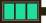

FAQ – Câu hỏi thường gặp

Có cần chơi BOTW trước không?
Có cần chơi BOTW trước không?
Không bắt buộc, nhưng nên để hiểu cốt truyện. TOTK độc lập.
Làm temple theo thứ tự nào?
Làm temple theo thứ tự nào?
Khuyến nghị Rito (Wind) → Goron (Fire) → Zora (Water) → Gerudo (Lightning). Có thể đổi.
Vũ khí gãy liên tục, làm sao?
Vũ khí gãy liên tục, làm sao?
Fuse vật liệu vào vũ khí tăng durability. Dùng Master Sword (cooldown). Thu thập nhiều vũ khí.
Làm sao có Paraglider?
Làm sao có Paraglider?
Hoàn thành Crisis at Hyrule Castle (báo cáo Purah sau Castle Ruins).
Autobuild ở đâu?
Autobuild ở đâu?
Quest "A Mystery in the Depths" → Great Abandoned Central Mine (Depths).
Master Sword ở đâu?
Master Sword ở đâu?
Theo Light Dragon marker, phóng từ Skyview Tower, kéo từ đầu rồng.
Có thể đi thẳng final boss không?
Có thể đi thẳng final boss không?
Có thể nhưng khó (cần chuẩn bị kỹ).
Shrine Sensor ở đâu?
Shrine Sensor ở đâu?
Shrine Sensor mở từ quest đầu với Purah/Robbie. Kiểm tra Purah Pad upgrades.
Dragon's Tears có mấy cái?
Dragon's Tears có mấy cái?
12 Dragon's Tears (11 geoglyphs + 1 final tại Rist Peninsula). Mỗi tear cho 1 memory.
Korok seeds dùng để làm gì?
Korok seeds dùng để làm gì?
Trả Hestu để nâng inventory vũ khí/cung/khiên; 1000 seeds → Hestu's Gift.
Có cần nâng cấp giáp không?
Có cần nâng cấp giáp không?
Nên nâng cấp tại Great Fairy để tăng phòng thủ; cần nguyên liệu và rupee.
Depths có nguy hiểm không?
Depths có nguy hiểm không?
Có Gloom giảm máu tối đa; mang Sunny dish và Brightbloom seeds.